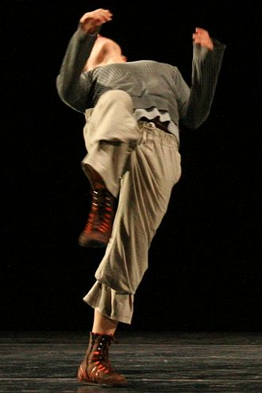
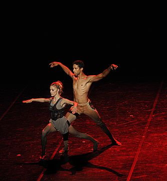
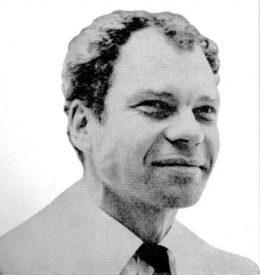

Contemporary dance stresses versatility and improvisation, unlike the strict, structured nature of ballet. Contemporary dancers focus on floorwork, using gravity to pull them down to the floor. This dance genre is often done in bare feet. Contemporary dance can be performed to many different styles of music. 
Contemporary dance draws on both classical ballet and modern dance, whereas postmodern dance was a direct and opposite response to modern dance. Merce Cunningham is considered to be the first choreographer to "develop an independent attitude towards modern dance" and defy the ideas that were established by it. In 1944 Cunningham accompanied his dance with music by John Cage, who observed that Cunningham's dance "no longer relies on linear elements (...) nor does it rely on a movement towards and away from climax. As in abstract painting, it is assumed that an element (a movement, a sound, a change of light) is in and of itself expressive; what it communicates is in large part determined by the observer themselves." Cunningham formed the Merce Cunningham Dance Company in 1953 and went on to create more than one hundred and fifty works for the company, many of which have been performed internationally by ballet and modern dance companies.
Mercier Philip "Merce" Cunningham (April 16, 1919 – July 26, 2009) was an American dancer and choreographer who was at the forefront of American modern dance for more than 50 years. He is also notable for his frequent collaborations with artists of other disciplines, including musicians John Cage and David Tudor, and artists Robert Rauschenberg and Bruce Nauman. Works that he produced with these artists had a profound impact on avant-garde art beyond the world of dance.
As a choreographer, teacher and leader of the Merce Cunningham Dance Company, Cunningham had a profound influence on modern dance. Many dancers who trained with Cunningham formed their own companies. They include Paul Taylor, Remy Charlip, Viola Farber, Charles Moulton, Karole Armitage, Robert Kovich, Foofwa d'Imobilité, Kimberly Bartosik, Flo Ankah, Jan Van Dyke, Jonah Bokaer, and Alice Reyes.
If you are curious about Contemporary Dance and want to know how to start practicing, click here to follow Emma Hawthorne on the basics of dance.
 You should follow Learn Enough on Twitter
here.
You should follow Learn Enough on Twitter
here.